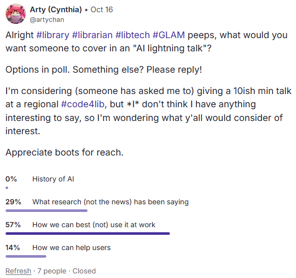
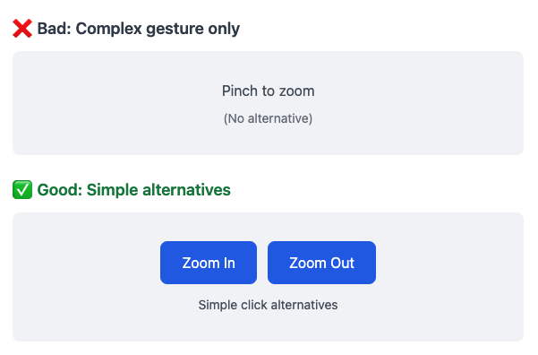

Title
Cynthia Ng
@Arty-chan
Nov 26, 2026
About me
- Formerly, Technology and Technical Services Librarian
- Now in the tech industry
- Learning about AI for 20 years
What to talk about

https://mastodon.social/@artychan/117451599571340948What do we mean by AI?
AI
software that does things we’d expect to need human intelligence
Generative AI (GenAI)
trained on huge numbers of examples to create new content
Types of GenAI
- Text: LLM (large language model)
- Images: text-to-image
- Audio: text-to-speech, voice cloning, music, sound effects
- Video: text-to-video, image-to-video
- Multimodal
 Source: https://easy-peasy.ai/ai-image-generator/images/-57600c42-0b0e-49db-8bb7-4b497954c1dc
Source: https://easy-peasy.ai/ai-image-generator/images/-57600c42-0b0e-49db-8bb7-4b497954c1dc
Agents
AI tools that also do things for you, such as:
- Fill out forms
- Create schedules and reminders
- Work through a set of tasks
What the research says: Pros and cons
Accuracy and fabricated sources
- Con
-
- AI invented sources and facts 1,2
- People went along with wrong AI answers 3,4
Misinformation and persuasion
- Pro
-
- Somewhat able to correct misinformation 5,6
- Accurate AI-written information was easier to understand 7
- Con
-
- Compelling disinformation, often indistinguishable from real posts 7,8
Health of the knowledge ecosystem
- Pro
-
- AI-generated ideas provided greater creativity 9
- Con
-
- AI-assisted stories more similar9 with less distinct ideas 10 losing less common ideas 11
- Lead to overconfidence in understanding 12
Learning and critical thinking
- Pro
-
- AI tutor decreased learning time 13
- Safeguards prevented "harmful" learning 14
- Con
-
- Unrestricted AI use caused lower scores once removed 14
- Offloading to digital tools weakened later memory 15
- More confidence and use of AI associated with weaker and less critical thinking 16,17
Productivity: real but uneven
- Pro
-
- Faster, better at various tasks 18,4,19
- Con
-
- Smaller gains with lower quality for experienced workers 19, and for more complex tasks 4
Bias and equity
- Pro
-
- Helps less-experienced workers most 18,19
- Bias can be found and fixed 22
- Con
-
- The people who could gain the most use it less 20
- AI tools are often biased 21,22
Environmental cost
- Pro
-
- Can help with smarter energy use and adapt to climate change 23
- Con
-
- Uses orders of magnitude more energy than task-specific systems 24,25
Using AI in your own work
Where it works well
- Learning and brainstorming
- Researching and summarizing
- Drafting and reviewing
- Troubleshooting
- Explaining things you don't understand
- Scripts and automations
- Diagramming
- Data reformatting and cleanup
Input and pointer interactions
Touch and pointer interaction
Target size
- Target Size (Minimum) - AA (2.5.8)
- 24x24 px or 24px diameter spacing
- Target Size (Enhanced) - AAA (2.5.5)
- 44x44 px

Pointer Cancellation - A (2.5.2)
- down-event not used
- up-event and allow undo
- up reversal
- essential
Dragging Movements - AA (2.5.7)
- single-pointer alternative
❌ Drag-only reordering
⋮⋮ Item A (drag only)
⋮⋮ Item B (drag only)
⋮⋮ Item C (drag only)
✅ Buttons as alternative
Item 1
Item 2
Item 3
Gesture accessibility
- Motion Actuation - A (2.5.4)
- alternative & disable option
- Pointer Gestures - A (2.5.1)
- provide simple alternatives

Site content
Consistent navigation
- Consistent Help - A (3.2.6)
Forms and input fields
Identify purpose
- Identify Input Purpose - AA (1.3.5)
- autocomplete
- for all user interface components, icons, and regions
Redundant Entry - A (3.3.7)
Shipping Address
Billing Address
Authentication
- Accessible Authentication (Enhanced) - AAA (3.3.9)
- alternative non-cft authentication method
- mechanism to assist
- Accessible Authentication (Minimum) - AA (3.3.8)
- object recognition
- non-text personal content

Status messages - AA (4.1.3)
Uses
aria-live="polite"
Timeouts - AAA (2.2.6)
- show time left before session expiry
Testing and validation
- Automated Testing (covers 20-60%)
Source: Deque, The Automated Accessibility Coverage Report. https://www.deque.com/automated-accessibility-testing-coverage/ - Example: axe, WAVE, Lighthouse
- Browser/Design Tools
- accessibility panel, responsive design mode
- Manual Testing
- screen readers, keyboard-only
Take Away
“WCAG covers a wide range of recommendations for making web content more accessible, [and f]ollowing these guidelines will also often make web content more usable to users in general.”
Thanks!

- Cynthia "Arty" Ng
- artychan@mastodon.social
- arty-chan@bsky.social
- about.me/cynthiang